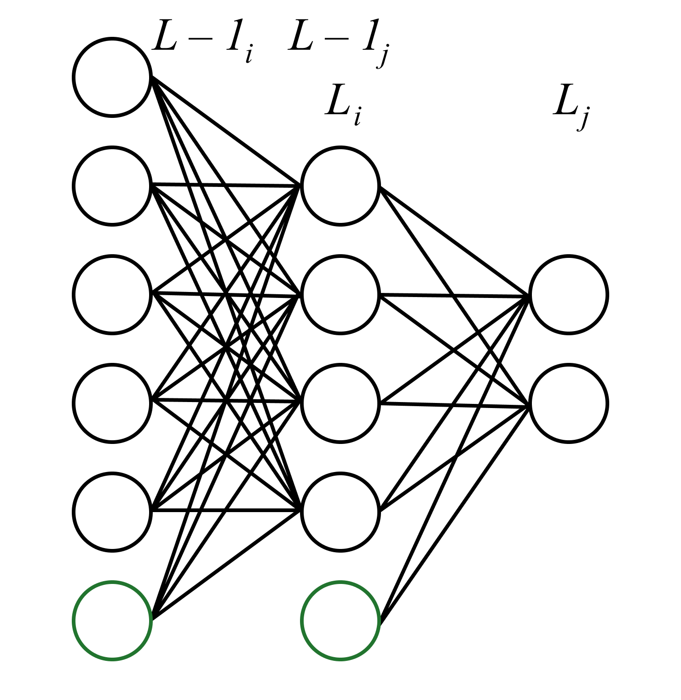
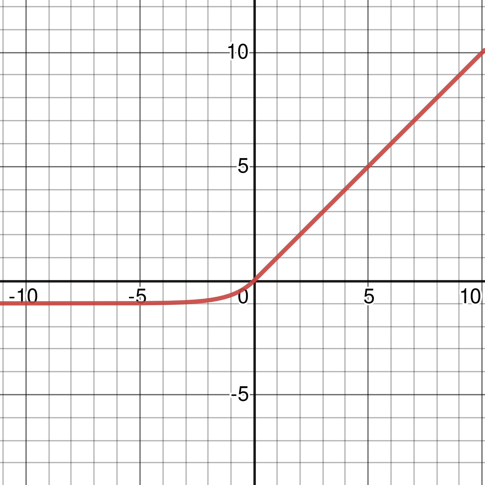
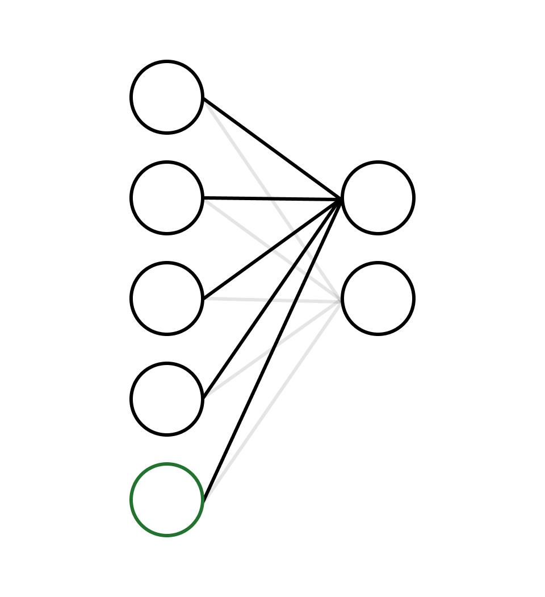

Chapter 8 - Backpropagation
“It is only with the heart that one can see rightly; what is essential is invisible to the eye.”
— The Little Prince by Antoine de Saint-Exupéry
I’ve discussed a lot about aspects of the issues that may occur during the learning stage in machine learning, but I haven’t yet introduced the most generalized learning algorithm for neural networks: backpropagation (a generalized version of the delta rule). We’ve learned about the delta rule, but it cannot be used to completely train a neural network. So now a good time to introduce backpropagation! In this chapter, you will learn about the mathematics behind backpropagation and also head into some practical exercises. If you can recall, we created a neural network architecture in Task 1 (MNIST/Digit recognition) consisting of a network object that stores layers (which store neurons). That architecture worked quite well for starters, but isn’t very efficient. In this chapter, we’ll explore another path to implementing neural networks with two fundamental data structures: vectors and matrices. I’ll also discuss the implementation of thread parallelism, which can give a substantial performance speedup to our programs.
Derivation
Recall that there are several components in a neural network that are used during training: activation functions, an error/loss function, weights, inputs, and biases. Note that the notion of learning is adjusting parameters of a network to minimize the error function, thus we need to model a relationship between each specific parameter and its effect on the loss function. This can also be represented by the sensitivity of the error function to changes in a specific parameter, which again involves derivatives. To derive backpropagation, we’ll need the chain rule, which as a reminder is expressed as:
\(\displaystyle{{\partial f(g(x))}\over{\partial x}}=f'(g(x))\cdot g'(x)\) or \(\displaystyle{{\partial f(g(x))}\over{\partial x}}=\displaystyle{{\partial f}\over{\partial g}}{{\partial g}\over{\partial x}}\)
Let’s first define notation and variables for our parameters:
- Weights are represented by: \(w_{i,\,j}\) where the weight represents a connection between the \(i\)th neuron of the current layer and \(j\)th neuron of the next layer. A variable \(L\) will represent the current layer.
- Biases are represented by: \(b_j\) where the bias is added to the weighted sum of \(w\) and \(x\) for the \(j\)th neuron in the next layer.
- Inputs are represented by: \(x_i\), for an input of the \(i\)th neuron in the current layer.
- Activation function: \(\sigma(x)\)
- Cost function: \(C(t,y)\), for \(t\) being the target output and \(y\) being the network output.
Then, we find that a forward pass through the network can be represented as:
$$z_{j,\,L}=\sum^{i}_{k\,=\,1}{(w_{k,\,j,\,L}\cdot x_{k,\,L})+b_{j,\,L}}$$
$$x_{j,\,L}=\sigma(z_{j,\,L})$$
The cost function (assuming mean-squared error) is:
$$C(t,y)=\sum^{i}_{k\,=\,1}{(t_k-y_k)^2}$$
To adjust our weights, we need to find:
$${{\partial C(t, y)}\over{\partial w_{i,\,j,\,L}}}={{\partial C(t, y)}\over{\partial o_{j,\,L}}}{{\partial o_{j,\,L}}\over{\partial z_{j,\,L}}}{{\partial z_{j,\,L}}\over{\partial w_{i,\,j,\,L}}}$$
Notice that:
$${{\partial z_{L}}\over{\partial w_{i,\,j,\,L}}}={{\partial [\sum^{i}_{k\,=\,1}{(w_{k,\,j,\,L}\cdot x_{k,\,L})+b_{j,\,L}}]}\over{\partial w_{i,\,j,\,L}}}=x_{i,\,L}$$
Because the only term in the summation that includes \(w_{i,\,j,\,L}\) is \(w_{i,j,\,L}\cdot x_{i,\,L}\). Also:
$${{\partial o_{L}}\over{\partial z_{L}}}=\sigma'(z_{L})$$
As \(o_{L}=\sigma(z_{L})\).
The only term that we cannot directly take a derivative of is \(\displaystyle{{\partial C(t, y)}\over{\partial o_{L}}}\), as \(L\) could refer to the output of any layer in a multi-layer network. What can be done, then?
Let’s use an example to help us solve this problem. Following this paragraph is an image depicting a neural network architecture with structure 5-4-2. Biases are the nodes in green and are distinguishable because there are no connections leading towards them.
Figure 8-1: A multilayer network, where green nodes represent biases. How should the first-second layer weight connections learn?
First, notice that we can use the delta rule to adjust the weights connecting the second last layer and last layer of the network as:
$${{\partial C(t, y)}\over{\partial o_L}}$$
$$={{\partial \sum^{j}_{k\,=\,1}{(t_k-o_{k,\,L})^2}}\over{\partial o_{L}}}$$
$$=2(o_{L}-t)$$
The network output is always equivalent to \(o_L\) for the weights connecting to the last layer. Combining this with all previous terms, we find that the gradient (amount to change, denoted with \(\Delta\)) for weights in the last layer is:
$$\Delta w_{i,\,j,\,L} = \alpha\cdot2(o_j-t_j)x_i\sigma'(z_{j,\,L})$$
With the usual learning rate \(\alpha\).
Notice that a weight from the first layer will directly affect the input to the last layer, which in turn directly affects the output of the network.
So, let us find how the input to the middle layer changes with respect to each weight in the first layer (of the example):
$${{\partial x_{i,\,L}}\over{\partial z_{j,\,L\,-\,1}}}{{\partial z_{j,\,L\,-\,1}}\over{\partial w_{i,\,j,\,L\,-\,1}}}$$
$$={{\partial \sigma(z_{j,\,L\,-\,1})}\over{\partial z_{j,\,L\,-\,1}}}{{\partial z_{j,\,L\,-\,1}}\over{\partial w_{i,\,j,\,L\,-\,1}}}$$
$$=\sigma'(z_{j,\,L\,-\,1})\cdot x_{i,\,L\,-\,1}$$
Notice that this is identical to the derivative of the last two terms for the update formula for the last layer in a network. Then, to find how the weight affects the final output, we multiply the above term with how each input to the middle layer changes the cost of the network. Since the cost function is the sum of the losses of both the output neurons, the derivative must be the sum of how the input changes each respective output neuron’s loss:
$$\sum_{k\,=\,1}^{j}{{\partial C(t_k, y_k)}\over{\partial x_{i,\,L}}}$$
$$=\sum_{k\,=\,1}^{j}{{\partial C(t_k, y_k)}\over{\partial o_{k,\,L}}}{{\partial o_{k,\,L}}\over{\partial z_{k,\,L}}}{{\partial z_{k,\,L}}\over{\partial x_{i,\,L}}}$$
(Note that \(x_{i,\,L}\) is the input to the last layer as \(i\) refers to the \(i\)th neuron in the current layer [the next layer is \(L-1+1=L\)])
Simplifying, we get:
$$\sum_{k\,=\,1}^{j}{{\partial C(t_k, y_k)}\over{\partial o_{k,\,L}}}{{\partial o_{k,\,L}}\over{\partial z_{k,\,L}}}{{\partial z_{k,\,L}}\over{\partial x_{i,\,L}}}$$
$$=\sum_{k\,=\,1}^{j}{2(o_{k,\,L}-t_k)}\cdot{\sigma'(z_{k,\,L})}\cdot{w_{i,\,k,\,L}}$$
Now, by multiplying this term with the derivative of how the input to the middle layer changes with respect to weights in the first layer, we get the gradient for updates to the weights in the first layer:
$$\Delta w_{i,\,j,\,L\,-\,1} =\alpha\cdot\sigma'(z_{j,\,L\,-\,1})\cdot x_{i,\,L\,-\,1}\cdot[\sum_{k\,=\,1}^{j}{2(o_{k,\,L}-t_k)}\cdot{\sigma'(z_{k,\,L})}\cdot{w_{i,\,k,\,L}}]$$
Well… we’re done now! Notice that we can recursively back-propagate through our network, starting from the last layer and finishing on the first. Also, the terms in the rightmost summation will have been previously computed when we back-propagated the through the layer (as weight updates in the next layer are computed before the current layer). So, all in all, we have:
$$\Delta w_{i,\,j,\,L} = \alpha\cdot2(o_j-t_j)x_i\sigma'(z)$$
$$\Delta w_{i,\,j,\,L\,-\,1} =\alpha\cdot\sigma'(z_{j,\,L\,-\,1})\cdot x_{i,\,L\,-\,1}\cdot[\sum_{k\,=\,1}^{j}{2(o_{k,\,L}-t_k)}\cdot{\sigma'(z_{k,\,L})}\cdot{w_{i,\,k,\,L}}]$$
Where we have \(\Delta w_{i,\,j,\,L}\) being the weight update for the last layer, and \(\Delta w_{i,\,j,\,L\,-\,1}\) being the weight update for preceding layers. We additionally multiplied the terms by a learning rate \(\alpha\). Now, weight updates look like:
$$w_{i,\,j,\,l}=w_{i,\,j,\,l}-\Delta w_{i,\,j,\,l}$$
But, wait… what about our biases? We haven’t yet derived their update formulas! But notice that biases are just weights multiplied by an always-constant input value 1 (so \(x\) is always 1 for biases), so we only need to modify our equations a little bit to reflect this:
$$\Delta b_{j,\,L}=\alpha\cdot 2(o_j-t_j)\sigma'(z_{j,\,L})$$
$$\Delta b_{j,\,L\,-\,1}=\alpha\cdot \sigma'(z_{j,\,L\,-\,1})\cdot[\sum_{k\,=\,1}^{j}{2(o_{k,\,L}-t_k)}\cdot{\sigma'(z_{k,\,L})}\cdot{w_{i,\,k,\,L}}]$$
$$b_{j,\,l}=b_{j,\,l}-\Delta b_{j,\,l}$$
That was a lot of information in just a few pages! If you weren’t able to grasp the underlying mathematical notation or how derivatives work in general, try search around for some short and simple explanations for them online. If you’re still stuck, I recommend you reread this chapter, or just continue onwards to the practical implementation section.
Application
Now that we have the essential ingredients for using backpropagation for parameters updates, it is time to introduce two new structures that we will use to help store our parameters more efficiently: vectors and matrices. Afterwards, I’ll just head straight on to a step-by-step implementation of these structures. We’ll attempt to make a full-on neural network architecture like the production-level standard ones (e.g., PyTorch, Tensorflow).
Vectors are essentially what programmers call arrays or lists (although the two differ slightly). Usually, they are expressed with brackets (‘\([]\)’), and store elements delimited by commas. In our implementation, we’ll create vector objects from double arrays. A fundamental operation that will be required in our implementation is an operation called the Hadamard product, or element-wise multiplication. As the latter name suggests, a Hadamard product takes the product of corresponding elements in a pair of vectors and returns a vector of the same size. Of course, this requires that the vectors be of the same length.
A matrix is essentially a vector of vectors. In programming context, you could either represent matrices as a two-dimensional array (e.g.,
matrix = double[][]
) or (as suggested) an array/vector of vectors (e.g.,
matrix = Vector[]
). You can also perform a Hadamard product on matrices, but in our implementation, we’ll just have them store vectors and perform operations on vector values (i.e., for our neural network to learn).
Now that you know the basics of vectors and matrices, it’s time to implement them! Try to follow along with a text editor (or most preferably, an IDE like IntelliJ CE [free] or Ultimate). Let’s start with vectors. First, let’s define a general vector class with three constructors:
class Vector {
private double[] vector;
Vector(int length) {
vector = new double[length];
}
Vector(double[] values) {
vector = values;
}
public Vector(int[] values) {
vector = new double[values.length];
for (int i = 0; i < values.length; i++) {
vector[i] = values[i];
}
}
}
You can initialize a vector by specifying values directly or by supplying a length and filling an array of that length with values later on. Let’s also define a Hadamard product method that performs the Hadamard product on the current vector and another vector (and return a new vector with the result). Alongside this, we’ll also define element-wise division:
int length() {
return this.vector.length;
}
Vector mult(Vector anotherVector) {
if (anotherVector.length() != this.length()) {
throw new IllegalArgumentException(
"mult(): Vectors not of same size: {" +
this.length() + ", " + anotherVector.length() +
"}.");
}
Vector output = new Vector(this.length());
for (int i = 0; i < output.length(); i++) {
output.vector[i] =
this.vector[i] * anotherVector.vector[i];
}
return output;
}
Vector div(Vector anotherVector) {
if (anotherVector.length() != this.length()) {
throw new IllegalArgumentException(
"div(): Vectors not of same size: {" +
this.length() + ", " + anotherVector.length() +
"}.");
}
Vector output = new Vector(this.length());
for (int i = 0; i < output.length(); i++) {
output.vector[i] =
this.vector[i] / anotherVector.vector[i];
}
return output;
}
Let’s also define an element-size summation and a way to total all values in the vector:
double total() {
double sum = 0;
for (double val : this.vector) {
sum += val;
}
return sum;
}
Vector add(Vector anotherVector) {
if (anotherVector.length() != this.length()) {
throw new IllegalArgumentException(
"add(): Vectors not of same size: {" +
this.length() + ", " + anotherVector.length() +
"}.");
}
Vector output = new Vector(this.length());
for (int i = 0; i < output.length(); i++) {
output.vector[i] =
this.vector[i] + anotherVector.vector[i];
}
return output;
}
We’ll also define some other methods for convenience later on:
Vector mult(Vector anotherVector) {
if (anotherVector.length() != this.length()) {
throw new IllegalArgumentException(
"mult(): Vectors not of same size: {" +
this.length() + ", " + anotherVector.length() +
"}.");
}
Vector output = new Vector(this.length());
for (int i = 0; i < output.length(); i++) {
output.vector[i] =
this.vector[I] * anotherVector.vector[i];
}
return output;
}
Vector mult(double value) {
Vector output = new Vector(this.length());
for (int i = 0; i < output.length(); i++) {
output.vector[i] = this.vector[i] * value;
}
return output;
}
Vector add(double value) {
Vector output = new Vector(this.length());
for (int i = 0; i < output.length(); i++) {
output.vector[i] = this.vector[i] + value;
}
return output;
}
Vector subtract(Vector anotherVector) {
if (anotherVector.length() != this.length()) {
throw new IllegalArgumentException(
"subtract(): Vectors not of same size: {" +
this.length() + ", " + anotherVector.length() +
"}.");
}
Vector output = new Vector(this.length());
for (int i = 0; i < output.length(); i++) {
output.vector[i] =
this.vector[i] - anotherVector.vector[i];
}
return output;
}
Then, let’s define a few methods to initialize our vector, and also a handy way to print it to the console. Additionally, we’ll have getters and setters:
import java.util.Arrays;
import java.util.Random;
...
private Random rand = new Random();
Vector fill(double value) {
for (int i = 0; i < this.length(); i++) {
this.vector[i] = value;
}
return this;
}
Vector fillGaussian() {
for (int i = 0; i < length(); i++) {
this.vector[i] = rand.nextGaussian();
}
return this;
}
Vector fillGaussian(double average, double deviation) {
for (int i = 0; i < length(); i++) {
this.vector[i] =
rand.nextGaussian() * deviation + average;
}
return this;
}
Vector fillRandom() {
for (int i = 0; i < length(); i++) {
this.vector[i] = rand.nextDouble();
}
return this;
}
double get(int index) {
return vector[index];
}
void set(int index, double value) {
vector[index] = value;
}
double[] values() {
return vector;
}
@Override
public String toString() {
return Arrays.toString(vector);
}
That’s it for our Vector class! You can see the full source code at the end of this chapter and also on Github with this book. In continuation, let’s define a Layer class that is a wrapper around an array of vectors. But before doing so, let’s also define enumerations for activation and error functions:
public enum ActivationFunction {
ELU,
IDENTITY,
LEAKY_RELU,
RELU,
SIGMOID,
SOFTMAX,
SOFTPLUS,
TANH
}
public enum Error {
MEAN_SQUARED,
BINARY_CROSS_ENTROPY,
CATEGORICAL_CROSS_ENTROPY
}
You might have noticed that I’ve introduced two new activation functions. ELU stands for Exponential Linear Unit, and is a variation of RELU (and Leaky-RELU), taking the form: \(\sigma(x)=\left\{\begin{array}{l} m(e^x-1),\ x≤0 \\ x,\ x>0 \end{array} \right.\), where \(m\) is a constant (I’ll use 1). The derivative of ELU is: \(\sigma'(x)=\left\{\begin{array}{l} e^x,\ x < 0 \\ 1,\ x ≥ 0 \end{array} \right.\) (for \(m=1\)).
Figure 8-2: Graph of ELU activation function.
The Softmax activation function takes the form: \(\displaystyle\sigma(x)_i={{x_i}\over{\sum_{j\,=\,1}{x_j}}}\). The sum of its outputs adds to 1, so it can be used to express network predictions as probabilities. Softmax is usually used with another type of error function called cross entropy, which we will also implement in this chapter. Softmax’s derivative is: \(\sigma'(x)_i=\sigma(x_i)(\delta_{i,\,j}-\sigma(x_j))\) for \(i\) being each index in the output vector and \(j\) being the index of the neuron whose output is currently being used for training. Here, \(\delta_{i,\,j}\) is the Kronecker delta, and represents: \(\delta_{i,\,j}=\left\{\begin{array}{l} 0,\ i≠j \\ 1,\ i = j \end{array} \right.\).
The categorical cross-entropy loss function takes the form: \(E(t,\,o)= -t\cdot \ln(o)\) (with derivative \((o-t)\) when paired with Softmax), and is designed for use in categorical classification tasks (tasks where networks classify data that belongs to multiple classes). Binary cross-entropy takes the form: \(E(t,\,o)=-(t\cdot\ln(o)+(1-t)\cdot\ln(1-o))\) (with derivative \(\displaystyle{{o-t}\over{o(1-o)}}\)), and is used for binary classification tasks (tasks where networks classify data into one of two classes/labels). I’ll explain why cross-entropy is used later. Note that the logarithm specified in cross-entropy is the natural logarithm, although some implementations use the base-2 logarithm. There isn’t much difference between which implementation you choose. Since cross-entropy requires the natural logarithm, let’s implement that function in the vector class:
Vector log() {
Vector out = new Vector(length());
for (int i = 0; i < length(); i++) {
out.set(i, Math.log(vector[i]));
}
return out;
}
Let’s start on the Layer class. First, we’ll define two constructors:
class Layer {
private final boolean isOutputLayer;
private final ActivationFunction activationFunction;
private final Error errorType;
Vector[] vectors;
Vector bias;
Layer(boolean isOutputLayer,
ActivationFunction activationFunction, Error error) {
this.isOutputLayer = isOutputLayer;
this.activationFunction = activationFunction;
this.errorType = error;
}
Layer(Vector[] vectors, Vector bias, boolean isOutputLayer,
ActivationFunction activationFunction, Error error) {
this.vectors = vectors;
this.bias = bias;
this.isOutputLayer = isOutputLayer;
this.activationFunction = activationFunction;
this.errorType = error;
initDeltaArray();
}
}
The user of the class can initialize a layer with several values:
- A boolean value indicating whether the layer is the output layer of a network.
- An ActivationFunction object indicating what activation function is used by the layer.
- An error function denoting the error function used during training.
- A Vector array (in the second constructor option) that is passed on to the layer. The given array should be the weights of the layer. You’ll see why this constructor may be useful later on.
- A Vector object (in the second constructor option) that is passed to the layer. This object should store the biases in the layer.
In our architecture, each Vector object storing weights stores them as illustrated below:
Figure 8-3: How our vector class stores weights.
This means, each vector object will have \(i\) weights, and ourvectors
variable will store \(j\) vectors. Here, \(i\) is the number of neurons in the current layer and \(j\) the number of neurons in the next layer.Note that in the second constructor, we initialize our delta arrays, which are arrays that store the amount to change each parameter (weight or bias) after each learning example. Additionally, we’ll also initialize our display error variable (more on this variable later).
...
private Vector[] deltas;
private Vector deltaBias;
Vector displayError;
private void initDeltaArray() {
deltas = new Vector[vectors.length];
for (int i = 0; i < vectors.length; i++) {
deltas[i] = new Vector(vectors[i].length());
}
deltaBias = new Vector(vectors.length);
if (isOutputLayer) {
displayError = new Vector(vectors.length);
}
}
Next, we’ll allow users to choose between mini-batch, stochastic and normal gradient descent by specifying a batch size parameter:
private int BATCH_SIZE = 1;
void setBatchSize(int BATCH_SIZE) {
this.BATCH_SIZE = BATCH_SIZE;
}
We’ll also have some convenience methods that get data from the layer.
int length() {
return this.vectors.length;
}
Vector error;
Vector getError() {
return error;
}
Vector getDisplayError() {
return displayError;
}
void resetDisplayError() {
if (displayError == null || !isOutputLayer) {
return;
}
displayError = displayError.mult(0);
}
private Vector output;
Vector getOutput() {
return output;
}
Vector getBias() {
return bias;
}
ActivationFunction getActivationFunction() {
return activationFunction;
}
Error getErrorType() {
return errorType;
}
Above, the output variable is quite self-explanatory (the output of
the layer), but you may be confused by the two error variables
displayError
anderror
. The former refers to the error we display in the console, and the latter refers to the error value we use during training. Note that the difference between these two variables and how they are calculated is that theerror
variable stores the result of performing the derivative of the error function (e.g., \(2(o-t)\) for MSE) whilst thedisplayError
variable stores the error calculated with the error function (e.g., \((t-o)^2\) for MSE). Note also thaterror
is replaced by a new value for each training sample the network learns from, whereasdisplayError
sums up all the errors and only resets after each epoch. To reset it, we’ll provide a method calledresetDisplayError()
. Next, let’s define a method that gives the layer its input and makes it feed the input through the network. We store the weighted sum of the product of our weights and the input; and output (which is the weighted sum passed through an activation function) into separate variables:
...
private Vector weightedSum;
Vector test(Vector input) {
if (input.length() != vectors[0].length()) {
throw new IllegalArgumentException("test(Vector): Input"
+ " vector not the same size as weight vectors.");
}
Vector output = new Vector(vectors.length);
for (int i = 0; i < vectors.length; i++) {
output.set(i, vectors[i].mult(input).total());
}
output = output.add(bias);
this.weightedSum = output;
output = activation(weightedSum);
return output;
}
private Vector input;
void feed(Vector input) {
this.input = input;
this.output = test(input);
}
Note that
feed()
is just a wrapper aroundtest()
that stores the input and output values (we can usetest()
to test the network). We use a functionactivation()
, which looks like this:
...
private Vector activation(Vector val) {
int valSize = val.length();
Vector out = new Vector(valSize);
for (int index = 0; index < valSize; index++) {
switch (activationFunction) {
case IDENTITY:
return val;
case TANH:
out.set(index, tanh(val.get(index)));
break;
case RELU:
out.set(index, relu(val.get(index)));
break;
case LEAKY_RELU:
out.set(index, leaky_relu(val.get(index)));
break;
case SIGMOID:
out.set(index, sigmoid(val.get(index)));
break;
case SOFTPLUS:
out.set(index, softplus(val.get(index)));
break;
case ELU:
out.set(index, elu(val.get(index)));
break;
case SOFTMAX:
return softmax(val);
default:
throw new IllegalArgumentException(
"activation(): No such ActivationFunction '" +
activationFunction + "'.");
}
}
return out;
}
private Vector softmax(Vector val) {
Vector out = new Vector(val.length());
double total = 0.0;
for (int i = 0; i < val.length(); i++) {
total += Math.exp(val.get(i));
}
if (total == 0.0) {
System.out.println(val);
throw new ArithmeticException(
"softmax(Vector val): total is 0, cannot divide by 0.");
}
for (int i = 0; i < val.length(); i++) {
out.set(i, (Math.exp(val.get(i)) / total));
}
return out;
}
private double elu(double val) {
return val > 0 ? val : Math.exp(val) - 1.0;
}
private double sigmoid(double val) {
return 1.0 / (1.0 + Math.exp(-val));
}
private double relu(double val) {
return val <= 0 ? 0 : val;
}
private double leaky_relu(double val) {
return val <= 0 ? 0.01 * val : val;
}
private double softplus(double val) {
return Math.log(1.0 + Math.exp(val));
}
private double tanh(double val) {
return (Math.exp(val) - Math.exp(-val)) /
(Math.exp(val) + Math.exp(-val));
}
These are just literal translations of the activation functions
you’ve seen in this chapter and the main activation functions
chapter. We’ll also define a
derivative()
method that takes the index of the currently being trained set of weights (which is used for the Softmax derivative) and outputs the derivative of the activation function being used (with respect to the network output). I’ve made references to the index bold so that they’re easier to spot, although note that it’s only used in the Softmax derivative (to perform the Kronecker delta).
...
Vector derivative(int index) {
int outLength = output.length();
Vector returnVector = new Vector(outLength);
switch (activationFunction) {
case IDENTITY:
return new Vector(output.length()).fill(1.0);
case TANH:
for (int i = 0; i < outLength; i++) {
returnVector.set(i, 1.0 - output.get(i) *
output.get(i));
}
return returnVector;
case RELU: {
for (int i = 0; i < outLength; i++) {
returnVector.set(i, output.get(i) < 0.0 ? 0.0 :
1.0);
}
return returnVector;
}
case LEAKY_RELU: {
for (int i = 0; i < outLength; i++) {
returnVector.set(i, output.get(i) < 0.0 ? 0.01 :
1.0);
}
return returnVector;
}
case SIGMOID:
return output.mult(output.mult(-1.0).add(1.0));
case SOFTMAX: {
for (int i = 0; i < outLength; i++) {
if (i == index) {
returnVector.set(i, output.get(i) *
(1.0 - output.get(i)));
} else {
returnVector.set(i, -1.0 * output.get(i) *
output.get(index));
}
}
return returnVector;
}
case SOFTPLUS: {
for (int i = 0; i < outLength; i++) {
returnVector.set(i, sigmoid(weightedSum.get(i)));
}
return returnVector;
}
case ELU: {
for (int i = 0; i < outLength; i++) {
if (output.get(i) >= 0) {
returnVector.set(i, 1.0);
} else {
returnVector.set(i, Math.exp(weightedSum.get(i)));
}
}
return returnVector;
}
default:
throw new IllegalArgumentException(activationFunction
+ " is not a valid ActivationFunction type.");
}
}
That was a lot of code! If you’ve been blindly copying it into a
local text editor or IDE, take some time to read through it and
understand what each part means. Then continue onwards for one
of the most essential methods in the layer class:
learn()
. We first define a variable that keeps track of the currently being trained example. This way, once we reach the batch size, we know that it is time to update our weights and biases.
private int currentInputBatchId = 0;
In our learning method, we’ll accept a vector consisting of the
target output (if the layer is the output layer, otherwise
null
is passed), next layer (used for training in hidden layers,null
for the output layer), and a double-precision floating-point value referring to the learning rate. If the user of the class accidentally sets the learning rate to 0, we’ll ping an error message notifying the mistake instead of training a network with \(\alpha = 0\).
void learn(Vector targetOutput,
Layer nextLayer, double alpha) {
if (alpha == 0) {
throw new NullPointerException(
"learn(): learning rate can't be 0 (no learning).");
}
Then comes the main backpropagation part. Recall that the formula for backpropagation is:
$$\Delta w_{i,\,j,\,L} = \alpha\cdot2(o_j-t_j)x_i\sigma'(z)$$
$$\Delta w_{i,\,j,\,L\,-\,1} =\alpha\cdot\sigma'(z_{j,\,L\,-\,1})\cdot x_{i,\,L\,-\,1}\cdot[\sum_{k\,=\,1}^{j}{2(o_{k,\,L}-t_k)}\cdot{\sigma'(z_{k,\,L})}\cdot{w_{i,\,k,\,L}}]$$
$$w_{i,\,j,\,l}=w_{i,\,j,\,l}-\Delta w_{i,\,j,\,l}$$
$$\Delta b_{j,\,L}=\alpha\cdot 2(o_j-t_j)\sigma'(z_{j,\,L})$$
$$\Delta b_{j,\,L\,-\,1}=\alpha\cdot \sigma'(z_{j,\,L\,-\,1})\cdot[\sum_{k\,=\,1}^{j}{2(o_{k,\,L}-t_k)}\cdot{\sigma'(z_{k,\,L})}\cdot{w_{i,\,k,\,L}}]$$
$$b_{j,\,l}=b_{j,\,l}-\Delta b_{j,\,l}$$
If the layer is the output layer, we calculate the derivative of the error function with respect to the ideal output and network output. We then multiply this by the derivative of the layer’s activation function. Then, we cache this value for use in training layers that aren’t the final layer of the network. Then, we multiply the error by the input and learning rate, and add the result to our delta array, which stores the changes that should be added to the weights after each batch of examples. If the layer is a hidden layer, we multiply the weights in the next layer that are connected to the output the current weight contributes to with the activation function derivative (and cache the result), input and learning rate. Below is the implementation:
learn()
(import java.util.stream.IntStream;)
...
IntStream.range(0, vectors.length)
.parallel().forEach(index -> {
Vector error;
if (isOutputLayer) {
Vector[] errorCalc = calcError(output, targetOutput);
error = errorCalc[0];
displayError = displayError.add(errorCalc[1]);
} else {
error = new Vector(vectors.length);
for (int indice = 0;
indice < nextLayer.vectors.length; indice++) {
error.set(index, error.get(index) +
nextLayer.vectors[indice].get(index)
* nextLayer.getError().get(indice));
}
}
error = error.mult(derivative(index));
this.error = error;
Vector delta = input.mult(error.get(index));
delta = delta.mult(alpha);
deltas[index] = deltas[index].add(delta);
deltaBias.set(index, deltaBias.get(index) +
error.get(index) * alpha);
});
Note that
IntStream.range().parallel().forEach
simply iterates through our vector array in parallel. This helps speed up our program, but will create a higher load on your computer’s CPU (or GPU). Finally, we increment the BatchID of the current input sample, and check whether it is equal to our batch size. If it is, then we update our weights and biases, reset the delta cached values and BatchID.
learn()
...
currentInputBatchId++;
if (currentInputBatchId == BATCH_SIZE) {
currentInputBatchId = 0;
for (int index = 0; index < vectors.length; index++) {
vectors[index] = vectors[index]
.subtract(deltas[index]);
deltas[index] = deltas[index].mult(0.0);
}
bias = bias.subtract(deltaBias);
deltaBias = deltaBias.mult(0.0);
}
}
We used another helper called
calcError()
in our learning method, which calculates the network error as an array, with the 0th index being the error derivative with respect to layer output, and the 1st index being the display error:
Vector[] calcError(Vector output,
Vector targetOutput) {
switch (errorType) {
case MEAN_SQUARED: {
Vector err = (output.subtract(targetOutput));
return new Vector[]{err.mult(2), err.mult(err)};
}
case BINARY_CROSS_ENTROPY: {
Vector display = (targetOutput.mult(output.log())
.add((targetOutput.mult(-1.0).add(1.0)))
.mult(output.mult(-1.0).add(1.0).log()))
.mult(-1.0);
return new Vector[]{
(output.subtract(targetOutput))
.div(output.mult(output.mult(-1.0)
.add(1.0)))
, display
};
}
case CATEGORICAL_CROSS_ENTROPY: {
Vector display = targetOutput.mult(output.log())
.mult(-1.0);
return new Vector[]{
output.subtract(targetOutput),
display
};
}
default: {
throw new IllegalArgumentException(
"calcError(): Error type " + errorType + " unknown.");
}
}
}
That was a lot! So I figured we should end this class with something
more simple. Recall that we had two constructors for the class. The
first constructor didn’t specify the weights and biases of the layer,
so they’re still
null
! We’ll supply the user of our class with three methods to initialize a network layer:- Not-custom Gaussian distribution.
- Custom Gaussian distribution (given an average and deviation parameter).
- Random/uniform distribution.
Layer fillGaussian(int size, int numVectors) {
vectors = new Vector[numVectors];
for (int i = 0; i < numVectors; i++) {
vectors[i] = new Vector(size).fillGaussian();
}
bias = new Vector(numVectors).fillGaussian();
initDeltaArray();
return this;
}
void fillGaussian(double average, double deviation) {
Vector[] replaceVect = new Vector[vectors.length];
for (int i = 0; i < replaceVect.length; i++) {
replaceVect[i] = new Vector(this.vectors[I].length())
.fillGaussian(average, deviation);
}
bias = new Vector(vectors.length)
.fillGaussian(average, deviation);
this.vectors = replaceVect;
initDeltaArray();
}
void fillRandom(int size, int numVectors) {
this.vectors = new Vector[numVectors];
for (int i = 0; i < numVectors; i++) {
vectors[i] = new Vector(size).fillRandom();
}
bias = new Vector(numVectors).fillRandom();
initDeltaArray();
}
That’s it for our Layer class! You may notice that some methods or fields aren’t strongly encapsulated, which is because they will be used by other classes in other chapters. Now, we’ll define a final class called Network, which has two constructors:
import java.io.*;
import java.nio.file.Files;
import java.nio.file.Path;
public class Network {
private Layer[] layers;
public Network(Vector config,
ActivationFunction[] activationFunctions,
Error errorType) {
if ((config.length() - 1) != activationFunctions.length) {
throw new IllegalArgumentException("Network(Vector," +
" ActivationFunction[], Error errorType): Vector" +
" length must be one more than ActivationFunction[]" +
" length.");
}
layers = new Layer[activationFunctions.length];
for (int i = 0; i < config.length() - 1; i++) {
if (i == layers.length - 1) {
layers[i] = new Layer(true, activationFunctions[i],
errorType)
.fillGaussian((int) config.get(i),
(int) config.get(i + 1));
} else {
layers[i] = new Layer(false, activationFunctions[i],
errorType)
.fillGaussian((int) config.get(i),
(int) config.get(i + 1));
}
}
}
This constructor initializes a neural network that is of the form \(x-x-...-x\), where these values are stored in a vector object. Each layer’s activation function and error function (one for the entire network) are also specified. If the number of layers isn’t equal to the number of specified activation functions, an error is thrown. The default initialization is the non-custom gaussian distribution, although the user can specify another initialization method with:
public Network fromCustomGaussianDistribution(
double average, double deviation) {
for (Layer layer : layers) {
layer.fillGaussian(average, deviation);
}
return this;
}
public Network fromUniformDistribution() {
for (Layer layer : layers) {
layer.fillRandom(layer.vectors[0].length(),
layer.length());
}
return this;
}
The second constructor allows users to initialize a network with a pre-trained network’s parameter values that are stored in a file. Here is the method for storing networks in files:
public void export(String name) {
System.out.printf("Exporting to %s.\n", name);
double[][][] weights = new double[layers.length][][];
double[][] bias = new double[layers.length][];
ActivationFunction[] activationFunctions = new ActivationFunction[layers.length];
Error type = layers[layers.length - 1].getErrorType();
for (int i = 0; i < layers.length; i++) {
double[][] layerWeights = new double
[layers[i].length()][];
for (int j = 0; j < layerWeights.length; j++) {
layerWeights[j] = layers[i].vectors[j].values();
}
activationFunctions[i] = layers[i]
.getActivationFunction();
weights[i] = layerWeights;
bias[i] = layers[i].getBias().values();
}
Object[] objects = {
weights, bias, activationFunctions, type
};
try (ObjectOutputStream oos = new ObjectOutputStream(new BufferedOutputStream(new FileOutputStream(name)))) {
oos.writeObject(objects);
} catch (IOException ex) {
System.err.printf("Cannot export to %s.\n", name);
}
}
Basically, the method stores each layer’s weights, biases, error function and activation function in an object array, and then uses Java’s serialization framework to write the object into a space-efficient file. The constructor basically just performs the opposite of the export function. We also warn users that the network they are using is imported from a file:
public Network(String filepath) {
if (!Files.exists(Path.of(filepath))) {
throw new IllegalArgumentException("Network(file)" +
": Please input a valid filepath to the " +
"exported network.");
}
try (ObjectInputStream ois =
new ObjectInputStream(
new BufferedInputStream(
new FileInputStream(filepath)))) {
Object[] objects = (Object[]) ois.readObject();
if (objects.length < 4) {
throw new IllegalArgumentException(
"Network(file): Cannot import saved network.");
}
double[][][] weights = (double[][][]) objects[0];
double[][] bias = (double[][]) objects[1];
ActivationFunction[] activationFunctions =
(ActivationFunction[]) objects[2];
Error type = (Error) objects[3];
layers = new Layer[weights.length];
boolean isOutputLayer = false;
for (int i = 0; i < weights.length; i++) {
Vector[] vectors = new Vector[weights[i].length];
for (int j = 0; j < weights[i].length; j++) {
vectors[j] = new Vector(weights[i][j]);
}
if (i == weights.length - 1) {
isOutputLayer = true;
}
Layer matrix = new Layer(vectors, new Vector(bias[i]),
isOutputLayer,
activationFunctions[I],
type);
layers[i] = matrix;
}
} catch (IOException | ClassNotFoundException |
ClassCastException e) {
System.err.println(
"An error occurred when importing an exported network.");
System.err.println(e);
}
System.out.println(
"Note: You are using an exported network.");
}
Some exceptions are thrown if the file import was unsuccessful. The more important part of the Network class is its training method. The method receives an array of all training examples’ data and their target outputs, the number of training epochs, learning rate, and batch size as parameters, and helps the user train a network with the configurations. If the number of input examples and the number of targeted/desired outputs aren’t the same, then we throw an exception. We also ensure that the batch size is positive and can evenly divide the training data. Then, we set the batch size for each layer.
public void train(double[][] input, double[][] target,
int epoch, double alpha, int BATCH_SIZE) {
if (input.length != target.length) {
throw new IllegalArgumentException("train(): Input" +
" and target (expected) indices must have the same" +
" number of examples.");
}
if (BATCH_SIZE <= 0) {
throw new IllegalArgumentException(
"train(): Batch size must be positive.");
} else if (input.length % BATCH_SIZE != 0) {
throw new IllegalArgumentException(
"train(): Batch size must evenly divide data.");
}
for (Layer layer : layers) {
layer.setBatchSize(BATCH_SIZE);
}
In the next block, we estimate the amount of time that training will take by making our network learn 1000 examples and getting their average time. We multiply this average time by the total number of examples and epochs to get the predicted time of computation. To make our network learn, we simply forward-pass through our network by feeding the input to the first layer, getting the first layer’s output to be the input to the second layer… and so on. Then, we reverse the order and start with the last layer of the network and make it calculate the error with respect to the ideal output. Afterwards, we back-propagate through our layers until we finish updating our first layer.
train()
...
{
long start = System.currentTimeMillis();
for (int i = 0; i < 1000; i++) {
layers[0].feed(new Vector(input[i]));
int size = layers.length;
for (int indice = 1; indice < size; indice++) {
layers[indice].feed(layers[indice - 1].getOutput());
}
layers[layers.length - 1].learn(
new Vector(target[i]), null, alpha);
for (int indice = 1; indice < size; indice++) {
layers[layers.length - indice - 1].learn(
null, layers[layers.length - indice], alpha);
}
}
double time = (System.currentTimeMillis() - start);
time *= input.length * epoch;
time /= 1000.0;
time /= 1000.0;
if ((time / 60.0) > 60.0) {
System.out.println("Training will take approximately "
+ Math.round(time / 3600.0) + " hours.");
} else {
System.out.println("Training will take approximately "
+ Math.round(time / 60.0) + " minutes.");
}
}
Although calculating this predicted time of training does update our neural network, it won’t really impact the performance of our network, so it is fine. If such performance risks are apparent, then you can comment out or remove the block of code. The next block is the actual training:
train()
...
for (int iter = 1; iter <= epoch; iter++) {
for (Layer layer : layers) {
layer.resetDisplayError();
}
long start = System.currentTimeMillis();
for (int index = 0; index < input.length; index++) {
layers[0].feed(new Vector(input[index]));
for (int indice = 1; indice < layers.length; indice++)
{
layers[indice].feed(layers[indice - 1].getOutput());
}
layers[layers.length - 1].learn(
new Vector(target[index]), null, alpha);
for (int indice = 1; indice < layers.length; indice++)
{
layers[layers.length - indice - 1].learn(
null, layers[layers.length - indice], alpha);
}
}
if (Double.isNaN(layers[layers.length - 1]
.getDisplayError().total())) {
System.err.println("Error exploded, producing NaN" +
" (not a number). Program terminated automatically.");
System.exit(-1);
}
if (epoch < 100 || iter % 50 == 0) {
System.out.println("Epoch: " + iter + " Error: " +
layers[layers.length - 1].getDisplayError().total() /
input.length + " Time: " +
((System.currentTimeMillis() - start) / 1000.0) +
" seconds.");
}
}
}
Notice that if the error explodes (i.e., gets too big), we report the issue and exit (as there is no point training with an error of value ‘NaN’). We’ll also define a convenience function in Network for users to test the network on a set of inputs and get the output:
public Vector test(double[] input) {
Vector out = layers[0].test(new Vector(input));
for (int index = 1; index < layers.length; index++) {
out = layers[index].test(out);
}
return out;
}
Finally, for debugging and general information logging, we’ll provide
an overridden
toString()
method that prints information like layer configuration and the number of trainable parameters (i.e., weights and biases).
@Override
public String toString() {
int trainableParams = 0;
for (Layer layer : layers) {
trainableParams += (layer.vectors[0].length() + 1) *
(layer.length());
}
StringBuilder out = new StringBuilder();
out.append("Network with ").append(layers.length)
.append(" layers and ")
.append(trainableParams)
.append(" trainable parameters.\n");
out.append("Size: {");
out.append(layers[0].vectors[0].length()).append(", ");
for (int i = 0; i < layers.length; i++) {
out.append(layers[i].length());
if (i != layers.length - 1) {
out.append(", ");
} else {
out.append("}");
}
}
for (int i = 0; i < layers.length; i++) {
out.append("\n\tLayer ").append(i + 1).append(":\n");
out.append("\t\tSize: ")
.append(layers[I].vectors[0].length())
.append("-").append(layers[i].length());
out.append("\n\t\tActivation Function: ")
.append(layers[i].getActivationFunction());
out.append("\n\t\tError: ")
.append(layers[i].getErrorType());
}
return out.toString();
}
}
That’s it! See if you can find a way to use our network object to learn on the MNIST training dataset! If you’re stuck, here is a possible implementation. In this implementation a 784-30-10 network with sigmoid activations and mean-squared error is created. Then, the network is trained for 5 epochs with a batch size of 1 and learning rate of 0.01:
import java.io.FileInputStream;
import java.io.IOException;
import java.io.ObjectInputStream;
import java.util.Arrays;
public class Driver {
public static void main(String[] args)
throws IOException, ClassNotFoundException {
Vector config = new Vector(new int[] {
784, 30, 10
});
ActivationFunction[] activationFunctions =
new ActivationFunction[] {
ActivationFunction.SIGMOID,
ActivationFunction.SIGMOID,
};
Network network = new Network(config, activationFunctions,
Error.MEAN_SQUARED);
ObjectInputStream ois = new ObjectInputStream(
new FileInputStream("input.ser"));
ObjectInputStream oiss = new ObjectInputStream(
new FileInputStream("target.ser"));
double[][] inputs = (double[][]) ois.readObject();
inputs = Arrays.copyOfRange(inputs, 0, 60000);
double[][] targets = (double[][]) oiss.readObject();
targets = Arrays.copyOfRange(targets, 0, 60000);
network.train(inputs, targets, 5, 0.01, 1);
network.export("network.ser");
NetworkTest.main(null);
}
}
We also run another program
NetworkTest
, which tests our network on the training and testing datasets and prints the accuracies:
import java.io.FileInputStream;
import java.io.IOException;
import java.io.ObjectInputStream;
public class NetworkTest {
public static void main(String[] args) throws IOException,
ClassNotFoundException {
Network network = new Network("network.ser");
ObjectInputStream ois = new ObjectInputStream(
new FileInputStream("input.ser"));
ObjectInputStream oiss = new ObjectInputStream(
new FileInputStream("target.ser"));
double[][] inputs = (double[][]) ois.readObject();
double[][] targets = (double[][]) oiss.readObject();
int corrects = 0;
for (int i = 0; i < 60000; i++) {
int x = getMax(network.test(inputs[i]));
int actual = -1;
for (int j = 0; j < targets[i].length; j++) {
if (targets[i][j] == 1) {
actual = j;
break;
}
}
corrects += x == actual ? 1 : 0;
}
System.out.println("Training: " + corrects + " / " +
60000 + " correct.");
double accuracy = 100.0 * (double) corrects / 60000.0;
System.out.println("Accuracy: " +
String.format("%.2f", accuracy) + "%");
corrects = 0;
for (int i = 60000; i < 70000; i++) {
int x = getMax(network.test(inputs[i]));
int actual = -1;
for (int j = 0; j < targets[i].length; j++) {
if (targets[i][j] == 1) {
actual = j;
break;
}
}
corrects += x == actual ? 1 : 0;
}
System.out.println("Testing: " + corrects + " / " +
10000 + " correct.");
accuracy = 100.0 * (double) corrects / 10000.0;
System.out.println("Accuracy: " +
String.format("%.2f", accuracy) + "%");
}
private static int getMax(Vector out) {
int index = 0;
double val = Double.NEGATIVE_INFINITY;
for (int i = 0; i < out.length(); i++) {
if (out.get(i) > val) {
val = out.get(i);
index = i;
}
}
return index;
}
}
If you had any issue with programming these snippets of code, ping
me an email or file an issue on Github, and I’ll try to help resolve
issues. In any case, here is the output of an experimental run of the
Driver
class:
Training will take approximately 2 minutes.
Epoch: 1 Error: 5.583719879382241 Time: 10.155 seconds.
Epoch: 2 Error: 3.50310763800316 Time: 10.3 seconds.
Epoch: 3 Error: 2.8034668058664343 Time: 10.131 seconds.
Epoch: 4 Error: 2.552442266053705 Time: 10.404 seconds.
Epoch: 5 Error: 2.3540135904076043 Time: 9.807 seconds.
Exporting to network.ser.
Note: You are using an exported network.
Training: 48529 / 60000 correct.
Accuracy: 80.88%
Testing: 8125 / 10000 correct.
Accuracy: 81.25%
As a sort of “food for thought” extension, here is another run, but with one slight modification:
Network network = new Network(config, activationFunctions,
Error.MEAN_SQUARED)
.fromCustomGaussianDistribution(0.0, 0.1);
In this snippet, we create our network initialized from a
custom gaussian distribution of average 0 and deviation 0.1.
The output after running
Driver
again is:
Training will take approximately 2 minutes.
Epoch: 1 Error: 3.061087367359798 Time: 10.318 seconds.
Epoch: 2 Error: 1.3980115498301675 Time: 9.911 seconds.
Epoch: 3 Error: 1.1846242010837236 Time: 10.779 seconds.
Epoch: 4 Error: 1.0450447302536288 Time: 10.273 seconds.
Epoch: 5 Error: 0.9521872192447736 Time: 9.833 seconds.
Exporting to network.ser.
Note: You are using an exported network.
Training: 56551 / 60000 correct.
Accuracy: 94.25%
Testing: 9407 / 10000 correct.
Accuracy: 94.07%
Make no mistake, this is not something that happened by chance! The testing and training accuracy of the second run was approximately 14% more accurate than the first run, but why? Let’s first understand how our network was originally initialized. Originally, our network was initialized with normal gaussian distribution (which in Java’s implementation, is gaussian distribution with average 0 and deviation 1) that ranges from -1 to 1. By modifying our distribution range to between -0.1 and 0.1, we reduced the overall range of our weight and bias initialization. Below is a plot of several different gaussian distributions:

Figure 8-4: Several different gaussian distributions.
Notice that the y-axis represents the probability of getting the x-axis number for the given gaussian distribution. In the graph, the blue curve represents gaussian distribution with average 0 and deviation 0.2, and the red curve represents gaussian distribution with average 0 and deviation 1.0. Notice that drawing a 0 in the red curve is less likely than drawing a 0 from the blue curve. Also, notice that if more weights are initialized at 0, the input to a neuron in the next layer would be \(\sigma(0)=0.5\sigma(0)=0.5\). To adjust our weights, recall that we multiply by the derivative of the sigmoid activation function with respect to the weighted sum:
$$\sigma'(x)=\sigma(x)\cdot(1-\sigma(x))$$
$$\sigma'(0)=0.5\cdot(1-0.5)=0.25$$
Then notice that the derivative of the sigmoid activation function peaks at 0. This means that if the weighted sum of the product of weights and inputs is closer to 0, the weights will be adjusted more. Now, let’s assume that we have a single layer network that gets 100 inputs that are approximately 50% zeros and 50% ones. Notice that we’ll then only have 50 weight and input products (the rest are 0). Therefore, the sum of the product of the weights with the inputs will have an average of 0, but deviation of \(\sqrt{50}\) (as summing gaussian distributions is equal to summing their averages and deviations respectively). Notice then that there is a strong likelihood that the summed result be between the range -5 to 5. If we applied the derivative of sigmoid to -5 and 5, we get: \(\sigma'(\pm 5)\approx 0.0066\). Notice then that these weights will be adjusted more slowly, and therefore affect our training performance. On the other hand, our gaussian distribution with deviation of 0.1 would achieve better results as the weight and input products’ sums will have deviation of \(\sqrt{5}\), which concentrates the weighted sum between a much smaller range of approximately -2 to 2. This helps improve our training as the derivative of these two bounds is most obviously larger than that of ±5 (and will result in larger weight updates).
You may also want to know a little more about our cross-entropy cost function. The reason why it is sometimes better for training networks is because both cross-entropy cost functions (for categorical and binary classification) remove the effects of the derivative of the activation function. For example, the derivative of binary cross-entropy is \(\displaystyle{{o-t}\over{o(1-o)}}\), so when paired with sigmoid, the \(\sigma(z)(1-\sigma(z))\) term cancels out \(o(1-o)\) (as \(o=\sigma(z)\)). As for categorical cross-entropy, it is only suitable in companion with the Softmax activation function, which has fewer terms whose derivative is \(o(1-o)\), so its convergence (how quickly a network can reach an optimal classification/regression accuracy) is usually faster than MSE.
For now, that’s all! Try to reread this chapter or review the chapter summary below.
Chapter Summary
- Backpropagation is a generalized version of the delta rule.
- Backpropagation rule updates for weights and biases: $$\Delta w_{i,\,j,\,L} = \alpha\cdot2(o_j-t_j)x_i\sigma'(z)$$ $$\Delta w_{i,\,j,\,L\,-\,1} =\alpha\cdot\sigma'(z_{j,\,L\,-\,1})\cdot x_{i,\,L\,-\,1}\cdot[\sum_{k\,=\,1}^{j}{2(o_{k,\,L}-t_k)}\cdot{\sigma'(z_{k,\,L})}\cdot{w_{i,\,k,\,L}}]$$ $$w_{i,\,j,\,l}=w_{i,\,j,\,l}-\Delta w_{i,\,j,\,l}$$ $$\Delta b_{j,\,L}=\alpha\cdot 2(o_j-t_j)\sigma'(z_{j,\,L})$$ $$\Delta b_{j,\,L\,-\,1}=\alpha\cdot \sigma'(z_{j,\,L\,-\,1})\cdot[\sum_{k\,=\,1}^{j}{2(o_{k,\,L}-t_k)}\cdot{\sigma'(z_{k,\,L})}\cdot{w_{i,\,k,\,L}}]$$ $$b_{j,\,l}=b_{j,\,l}-\Delta b_{j,\,l}$$ Note that \(2(o_j-t_j)\) is the derivative of the Mean Squared Error. To use a different error function, simply replace the derivative with that of the desired error function’s derivative.
- ELU stands for Exponential Linear Unit, and is a variation of RELU (and Leaky-RELU), taking the form: \(\sigma(x)=\left\{\begin{array}{l} m(e^x-1),\ x≤0 \\ x,\ x>0 \end{array} \right.\), where \(m\) is a constant (usually 1). The derivative of ELU is: \(\sigma'(x)=\left\{\begin{array}{l} e^x,\ x < 0 \\ 1,\ x ≥ 0 \end{array} \right.\) (for \(m=1\)).
- The Softmax activation function takes the form: \(\displaystyle\sigma(x)_i={{x_i}\over{\sum_{j\,=\,1}{x_j}}}\). The sum of its outputs adds to 1, so it can be used to express network predictions as probabilities. Softmax is usually used with another type of error function called cross entropy. Softmax’s derivative is: \(\sigma'(x)_i=\sigma(x_i)(\delta_{i,\,j}-\sigma(x_j))\) for \(i\) being each index in the output vector and \(j\) being the index of the neuron whose output is currently being used for training. Here, \(\delta_{i,\,j}\) is the Kronecker delta, and represents: \(\delta_{i,\,j}=\left\{\begin{array}{l} 0,\ i≠j \\ 1,\ i = j \end{array} \right.\).
- The categorical cross-entropy loss function takes the form: \(E(t,\,o)= -t\cdot \ln(o)\) (with derivative \((o-t)\) when paired with Softmax), and is designed for use in categorical classification tasks (tasks where networks classify data that belongs to multiple classes).
- Binary cross-entropy takes the form: \(E(t,\,o)=-(t\cdot\ln(o)+(1-t)\cdot\ln(1-o))\) (with derivative \(\displaystyle{{o-t}\over{o(1-o)}}\)), and is used for binary classification tasks (tasks where networks classify data into one of two classes/labels).
- Convergence is the notion of network training converging (reaching) to a minimal loss.
- Initializing weights and biases with gaussian distribution average 0 and deviation close to zero can improve convergence rates.